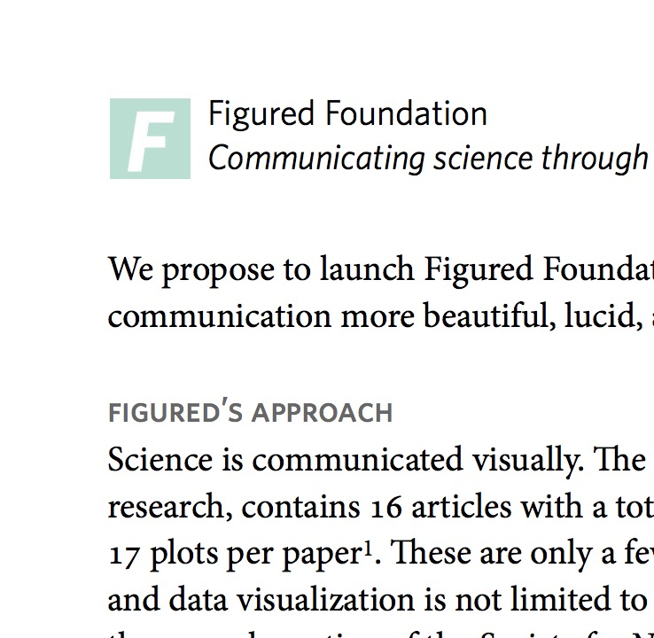
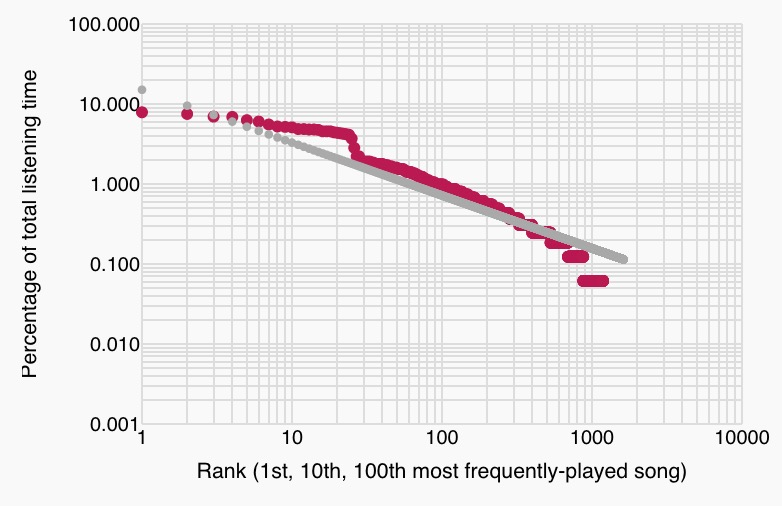

Mined Mastery 1
Turning novices into masters by converting inert knowledge
into technologies that imbue expertise.
- On inert knowledge and facing our limitations
- On lifelinting
- On smart defaults
- On seeing by knowing
- On the MIT Media Lab
- Selected projects & CV
1 — On inert knowledge and facing our limitations
In aggregate, we have come to know a great deal about the world. We can predict the motion of the planets, develop drugs to treat illness and disease, and, looking inwards, observe our inner mental life, expressing it as paintings and poems. Across the arts, sciences, technology, and other human endeavors, experts have developed useful organizing frameworks and then elaborated them with details, rich and varied. But this collective knowledge is in many ways inert — trapped in its original form as books, essays, speeches, works of art, jokes, presentations, proverbs, and performances — and thus unable to affect human thought and behavior as effectively as its creators intended. This is because people have limits: there is only so much that we can learn and understand in the fistful of decades we are given.
But we try our best.
How can inert knowledge be converted into technology that imbues expertise automatically?It is the attempt to find an answer to this question that motivates the creation of a Mined Mastery group, inspiring a series of projects, ongoing and future, that are described below. What we propose will require a fundamental redesign of the way that mastery is achieved.
A brief biography: I'm Jordan Suchow, a cognitive scientist exploring minds, machines, learning, memory, visual experience, evolution, and technology.22. One focus of my work is the limits of learning and memory — limits that the Mined Mastery group seeks to overcome. I have a PhD and an AM from Harvard in psychology and a BS in computer science from Brandeis. You can reach me by email at jwsuchow@gmail.com or by phone at +1 914 582 2646.
2 — On lifelinting
In the course of writing the Python programming language, Guido van Rossum, its author, also wrote PEP8, a document defining best practices in coding style that runs over 6,500 words and defines more than 100 conventions for writing clear and consistent code. The goal of PEP8 is simple enough: to teach programmers conventions and encourage their widespread adoption. PEP8's advice is sensible and smart, but without the transformation that was to come, it would never have succeeded. This is because the original format of the knowledge was inert, and the method of adoption that it recommended — reading the guidelines and, in doing so, becoming a better programmer — rests on assumptions about learning and memory that are untenable.
Enter linting. A linter is a computer program that scans source code for syntactic and stylistic errors, and which can provide targeted, actionable recommendations about code. The PEP8 linter, for example, automatically detects noncompliance with Rossum's style guide. And autopep8, a new linter that builds on its predecessor, takes linting a step further by automatically rewriting the code.
Linting is thus a useful model of imbuing expertise, and here we extend it from coding to other human endeavors where it promises huge gains for humanity: interacting with police, learning languages, writing prose, making friends, washing hands, negotiating, and preparing for emergencies.
We call it lifelinting.
Sample proposed project: “proselint”
Writing is notoriously hard, even for the best writers. Yet there is a tremendous amount of knowledge about the discipline strewn across usage guides, dictionaries, technical manuals, essays, pamphlets, websites, and the hearts and minds of great authors and editors. But poring over Strunk & White hardly makes one a better writer — it turns you into neither Strunk nor White. And nobody has the willpower (nor the time, memory, or desire) to do what is necessary to apply all the advice from Garner's Modern American Usage, a 975-page usage guide, to everything that they write. The knowledge is trapped, still waiting to be extracted and transformed.
We have devised a straightforward solution: convert the knowledge into the form of a linter for prose. We call it proselint.33. Proselint was conceived in collaboration with Mike Pacer at UC Berkeley. Proselint aggregates human knowledge about best practices in writing and then redesigns the act of writing to embody that expertise. It circumvents slow and effortful learning by converting inert knowledge directly into expertise.
Proselint places the world's greatest writers and editors by your side, where they whisper suggestions on how to improve your prose.
Proselint is a massive undertaking. Garner's book alone has 11,000 entries — and it's only one of many sources of expert knowledge on the topic. The entries vary with regard to their difficulty of implementation. Examining 100 of these entries at random reveals that half of them are easy to implement, the kind of thing that could be assigned as a homework problem (e.g., recognizing that '$10 USD' is redundant, that 'very unique' is comparing an uncomparable adjective, or that people from Michigan are called 'Michiganders', not 'Michiganites'). Thirty percent are moderately challenging, requiring a week's effort.44. These include some of the most high-impact entries, such as the detection of gender bias (as in, “The lady lawyer took on my case.”). Fifteen percent are hard — they are entire projects, requiring advances in AI. And the remaining advice (around five percent), the best kind, is AI-complete. Proselint is thus the perfect enterprise, one that has trivial subproblems and lofty goals, an immediate impact and a long future.55. One day, our mechanical colleagues may demand their share of credit for the work we do together. I wrote about this possibility in a short story published in Nature.
In its grandest form, proselint gains the ability to understand the logical structure of prose and its semantics, becoming a tool that redefines writing and creates a new form of human expression. No longer will writing be an effortful process where a person stares at a glowing rectangle and strains to find the right combination of words while pecking at a keyboard. Instead, it will be a process by which seeds of creative thought and insight are instantly transformed into prose that flows effortlessly forth, powered by our aggregated expertise. Eventually, we will close the loop, converting creative thought directly into technological systems that automatically apply the insight contained within them, enabling expression of the dense worlds inside us and moving beyond language as an intermediate layer of representation.
Status: proselint is an early demo, an implementation of a couple hundred entries from Garner's book and some other sources.66. Obviously, I ran proselint over the current proposal, where it made many suggestions, including the suggestion that I delete 'obviously' from the start of this sentence: it may not be obvious to my readers and it's not worth the risk of alienating them. Here are screenshots of it running as a plugin for the popular text-editor Sublime Text:
{kind=link}
{kind=link}
Sample proposed project: “repeat”
One of the challenges of lifelinting is that it requires technologies that detect human behavior. In some domains, such as writing prose, this is essentially a solved problem. But in other domains, such as complex social behaviors, the only reliable sensor is another human.
Repeat makes it possible to practice complex social behaviors that are ordinarily hard to practice — e.g., interacting with the police, learning a foreign language, flirting, responding to an emergency, quelling a bar fight, and social networking. Some of these behaviors are hard to practice because making a mistake is costly; others are hard because feedback is rare. We are designing a simple behavioral technology that makes it possible to practice these behaviors: a new kind of environment where people, conversing with actors trained in the best practices of a particular field, can restart interactions simply by walking away, starting over from scratch.77. Repeat is being developed in collaboration with Ariella Katz Suchow, a theatre educator in Boston. At times, the actors pause the conversation to give targeted feedback about what the participant said or did and how it can be improved in the next iteration. The interaction is then repeated. This provides a feedback loop for refining skills that is normally unavailable in everyday life. It is a behavioral technology inspired by military simulations, mock negotiations, and play rehearsals.
Repeat will grow to become a platform for learning in the most general sense — a new kind of physical space where simulating experiences is made possible, where skills that were once unpracticeable can not only be practiced but mastered. And eventually, the technology can be liberated from the spaces we define and embedded into everyday life.
One of the most exciting applications of Repeat is in learning a rare skill that has life-long consequences for those who lack it: communicating with police. The police are here to protect us, but sometimes we need to protect ourselves from them. How can we be respectful while maintaining our rights? Criminal defense lawyers and law enforcement have a great deal to say about this issue, but their primary means of communicating it — instructional videos, lectures, pamphlets — are inert forms of knowledge that aren't readily available at the times when they are needed the most.88. See, e.g., the series of instructional videos created by Judge Bill Murphy for Flex Your Rights, a civil liberties organization focused on improving constitutional literacy. In the heat of the moment, when a teen is being arrested or questioned by the police about a crime of which they are suspected, how many of them will remember to ask for a lawyer, recalling a pamphlet skimmed in middle school? Not many. Repeat can fix this problem. Imagine a world where every child spends a day each year, after school, simulating high-stakes interactions with police officers in a safe environment where the stakes are removed. It would be a game-changer. This application of lifelinting has the potential to fundamentally improve relations between civilians and law enforcement and bring social justice to parts of society where it is sorely lacking. And this is just one of many applications.
Status: Repeat is in its earliest stages: we've interviewed actors, developed training materials, and scoped out venues.
3 — On smart defaults
Here's some advice: stop giving advice.99. I haven't always been so adverse to advice. A few years back, I was interviewed by Nerve.com for a piece titled “Sex advice from scientists.”
10. Argote, L., & Ingram, P. (2000). Knowledge transfer: A basis for competitive advantage in firms. Organizational Behavior and Human Decision Processes, 82(1), 150–169.
11. See, e.g., BJ Fogg's system for developing new habits.
Advice, though it may be principled, thoughtful, and worth following, is hard to apply in new settings once it has been learned.10 And even when its applicability is recognized, developing a new habit is still slow, costly, and difficult.11 The essential difficulty of incorporating advice into daily life limits the utility of advice-giving as a cultural practice. Unless solicited by someone actively deciding or taking action, the practice of advice-giving is ubiquitous not because it's optimal, but because it's the best we've found so far.
We can do better.
Consider science visualization as a case study. The dominant approach to promoting good design in scientific visualization is to inform through advice and example. The most famous proponent of this approach is statistician and data-visualization expert Edward Tufte, whose series of books, beginning with the 1982 classic The visual display of quantitative information, showed the world what well-designed data looks like. Scientists may know Tufte's principle that good visualizations have a high “data to ink ratio” — less clutter, more data. And they may be capable of identifying plots that exemplify the principle. Even so, they may still be unable to recognize clutter in their own graphs or understand how to use their existing tools to reduce the clutter once it has been noticed. The resulting visualizations don't follow the known principles espoused by experts and embodied in great design.
Retooling is another method for adopting an expert's advice, but it suffers from a different problem. The most popular tools, such as matlab and Excel, have default behavior that produces notoriously bad design, requiring expertise to wrangle a serviceable plot.1212. See, for example, excelcharts.com. And the tools that do encourage good design, enabling new forms of exploration and interactivity, are hard to learn and even harder to use correctly.
Sample completed project: “palettable” 13
13. I've included completed projects to establish precedent and to give a fuller sense for the work the lab might do.In palettable, we developed a method that circumvents these problems by remixing the two dominant approaches. It resulted in the principle of smart defaults. We think the best way to make science communication more beautiful, lucid, and intelligible is first to explain the principles, but then to provide people with the means to modify their existing workflow to follow the principles by default. This technique has the same benefits as advising and retooling, but it does not suffer from the problems of costly and effortful adoption — it introduces the new techniques in the context of a familiar tool and imbues expertise automatically.
For more details, including a case study that applies our principle of smart defaults to Multi-scale banking to 45°, a new visualization technique, see the following proposal for Figured Foundation, an organization I created that is dedicated to communicating science through design. Palettable is working software.1414. Palettable and Figured Foundation were created in collaboration with Bang Wong (the creative director of the Broad Institute), Jeremy Freeman (Janelia Farm), Ben Golder (MIT), and Chana Haouzi (Harvard).
4 — On seeing by knowing
The motivating principle behind the proposed Mined Mastery group — that inert knowledge, spread across and between disciplines, can be converted into technology that imbues expertise automatically — suggests a new approach to solving the problem of vision.1515. The study of vision is where I got my start in science. For many years, I studied with Denis Pelli at NYU. We wrote a paper together on object recognition and learning that was published in PNAS. While at Harvard for my PhD, in the psychology department, I worked with George Alvarez in the Vision Sciences Laboratory, performing experiments on vision and memory. The key insight is that, to the extent that a person or machine already knows what is out there in the world, vision is ultimately unnecessary: the information that light provides is already known. And there is a tremendous amount of inert knowledge relevant to the question of what is where and what it looks like, including photographs, architectural blueprints, historical narratives, documents, maps, biology textbooks, cellphone GPS data, artist's renderings, dance videos, atlases of anatomy, and much more. By aggregating knowledge from these varied sources, and in doing so unifying the sciences and arts and other avenues of human inquiry into a combined model, we can create new kinds of artificial object-recognition and scene-understanding systems, unprecedented in their capability.
Most computer vision algorithms are bottom-up, combining pixels into features into objects into scenes. The Seeing-by-knowing system runs in both directions, bottom-up and top-down, meeting in a mid-level search over possible worlds. This kind of search would normally be intractable, but the knowledge we mine from inert sources dramatically reduces the search space. At the extreme, when all is known, the search space has but a lone point: reality.
A brief technical sketch of the system: The system has three components. The first is a search space: a model of all possible worlds, akin to a formal grammar of CAD models or the 3D models that underlie animations and computer games. The second is a set of bottom-up algorithms that convert the observed image into constraints on the model. The third is a search algorithm over possible worlds — and this is where bottom-up and top-down meet in the middle — whereby a hypothesized world is rendered downward into a mid-level visual representation, and the observed image is converted upward into the same representational space. Having been transformed in this way, the two representations can be compared. From the comparison, a new hypothesized world is born, and the next iteration of the search begins. Eventually, the search terminates, leaving us with a model that renders approximately into the observed image. Then we are done — we have seen the light — and the model can be used directly, as if it were itself the world.
Status: I've started on a small demo that operates in the universe of Flatland.1616. This is Edwin Abbott's 1884 fictional world where agents are shapes on a plane, unaware of the third (and higher) dimensions. Scaling it up to our universe is the essential challenge. It will take decades of collaboration, living somewhere in that beautiful negative space defined by the dark ink of disciplines, mining our collective mastery.
5 — On the MIT Media Lab
These projects are meant to give you a taste of what the Mined Mastery group might accomplish. The work draws on every angle of human inquiry with the goal of improving and enriching our lives, rejecting disciplinary boundaries and aimed squarely at building new kinds of things that matter: new tools, new spaces, new senses. The MIT Media Lab is the only place I know of that would even tolerate this kind of work. The work is too forward-looking for industry, too weird for typical academia.
What makes the Media Lab so special, and exactly the right place for what I am proposing to do, is not that it merely tolerates the blending and mixing of ideas and disciplines, but that it actively encourages it. And it's precisely this process of aggregating, remixing, and blending domains that lies at the heart of the proposed Mined Mastery group and the projects described herein.
For instance, Proselint, an example of lifelinting, draws on the domains of writing, copy editing, user interface design, software engineering, linguistics, machine learning, and AI to redefine mastery, and someday to redefine writing.
Repeat is a mashup of education, performance art, life coaching, interior architecture, social engineering, and the (doomed) art of giving generic advice. Its various applications draw from an even larger variety of domains: policing, practicing law, resolving conflicts, ensuring safety, learning language, socializing, negotiating, and more.
And Seeing-by-knowing is the greatest remix of all, drawing on nearly every domain of human experience, including animation, computer graphics, architecture, vision, physiology, sculpting, photography, and industrial design, with the goal of redefining the problem of seeing and developing new tools and experiences born from mining inert sources of our collective knowledge.
Thanks for your consideration.
— Jordan Suchow
6 — Selected projects & CV
Here are other projects I have created:
- Autonudger is a commitment device that turns off the internet when you don't go to the gym three times a week. (With Justin Jungé.)
- LQQK is an Arduino-based wristband that vibrates every few minutes and does visual-experience sampling, reminding the wearer to record what they were looking at.
- Silencing is a visual illusion that demonstrates how hard it is to notice when moving objects change. This won Best Visual Illusion of the Year in 2011, and the demo videos I created for it have been seen over 5,000,000 times. A physical installation of the illusion is in the permanent collection of The Exploratorium. (With George Alvarez.) Stare at the center and notice what happens to the color changes when the dots move:
- Antisilencing is a computer graphics method that corrects for the effects of silencing in head-up displays.
- Clockwalk is a series of stochastic clocks, such as this one, that explore variants of timekeeping that are a better match to human experience:
- Zipf it is an instructional web app that teaches people about Zipf's law by analyzing and plotting their iTunes listening habits.
 - Upside down is a visual phenomenon where, looking at an upside down face, the eyes eventually appear to flip right-side up, giving the eerie impression that they no longer belong to it. (With Ken Nakayama and Maryam Vaziri-Pashkam.)
{kind=link}
And here is a CV.